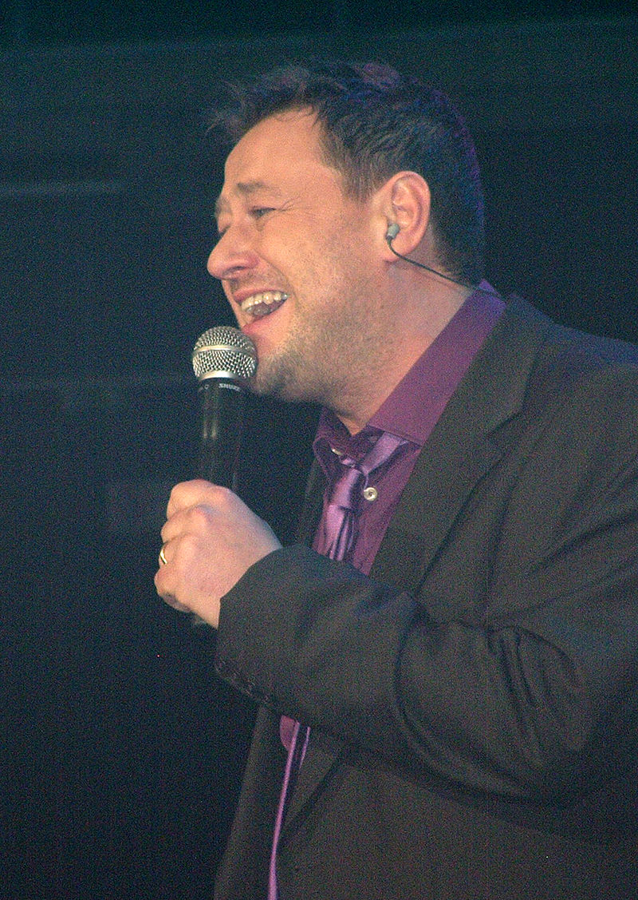

Bart De Pauw (Wachtebeke, 28 mei 1968)
is een Belgisch televisiemaker die vooral bekend werd door de programma's Buiten De Zone, Schalkse Ruiters, Het Geslacht De Pauw, Willy's en Marjetten, De Mol, Quiz Me Quick en De Biker Boys. Hij treedt op als acteur en scenarist. Veel van zijn programma's zijn humoristisch van inslag. Hij kwam in 2017 in opspraak nadat er meldingen kwamen over grensoverschrijdend gedrag
- acteur
- scenarist
- televisiemaker